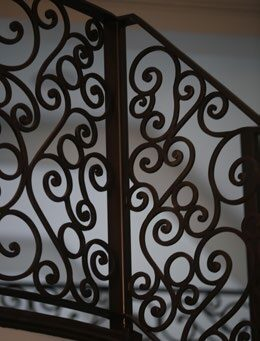

Circular railing for a grand double staircase
A custom ornamental steel railing system for a high-end residential double staircase, built from a single reference photo — precision layout across angled stair runs, intermediate landings, and curved balcony panels.

The challenge
The only starting point was a single reference image. From it, the project had to interpret the existing architecture and translate intricate decorative ironwork into precise production drawings — adapting the scrollwork to the staircase's own geometry, a 32.5° diagonal run, so the pattern's rhythm stayed intact across the flat landings.
What I did
Developed the full concept package: layout drawings for the angled runs and landings, scrollwork distribution calculated to the staircase's exact slope, and horizontal balcony panels that carry the same pattern language around the curve — balancing classical detail with the structural standards the fabrication team needed to build from.